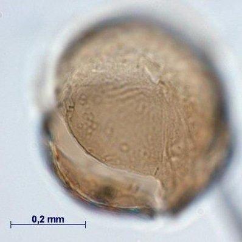
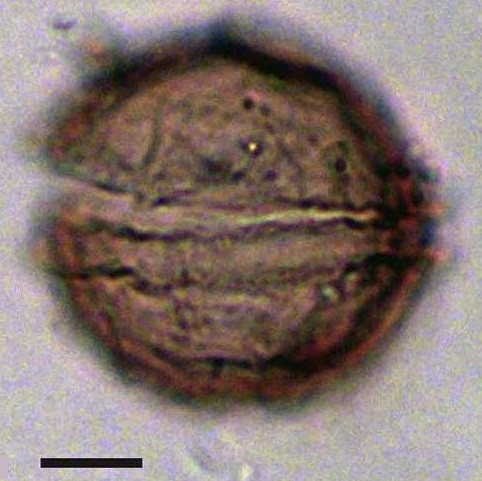
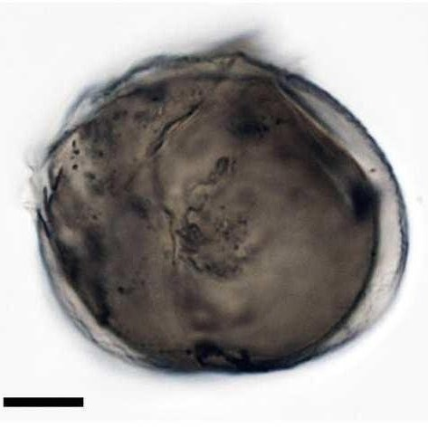
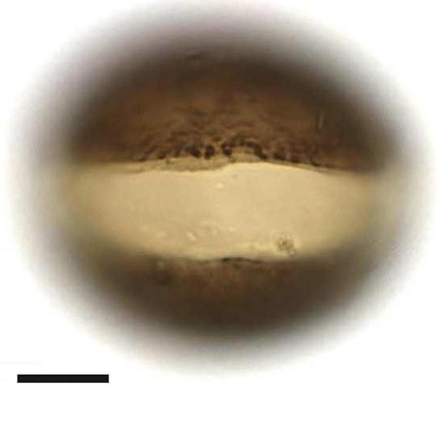

CYSTS LIST
- Alexandrium
- Archaeperidinium/RBSC
- Brigantedinium/Protoperidinium
- Diplopsalopsis/Protoperidinium
- Dubridinium
- Gymnodinium
- Impagidinium
- Lejeunecysta
- Nematosphaeropsis
- Peridinioids
- Polykrikos
- RBSC/Protoperidinium
- Selenopemphix
- Spiniferites
- Stelladinium
- Transparent/Hollow
- Transparent/Solid
- Transparent/Spherical
- Trinovantedinium
- Votadinium
DUBRIDINIUM
Inner layer |
Outer layer |
Remarks |
Archeopyle |
Species |
Central body (um.) |
Image |
BrownThick microgranular |
Thin smooth |
Thick inner wallClosely attached outer layer |
TheropylicFollowing cingulum |
Dubridinium caperatum | 30 to 32.8 (D) |
 |
BrownSmooth thick wall |
Folded into a reticulum (fenestrate appearance) |
Fenestrate appearancein outer layer |
Theropylic |
Dubridinium cassiculum | 24 to 34 (min D)35 to 47 (max D) |
 |
BrownScabrate to finely microgranular |
Membranous |
Size, ornament of the inner layer and granules betwwen the two layers |
Theropylic |
Dubridinium cavatum | 35 to 58 (min D)42 to 58 (max D) |
 |
BrownThin wall |
String of solid verrucate ornamentation |
Irregular equatorial shape, size and strings of solid verrucate ornamentation |
TheropylicFollowing cingulum |
Dubridinium ulsterum | 35 to 44 (min D)37 to 51 (max D) |
 |